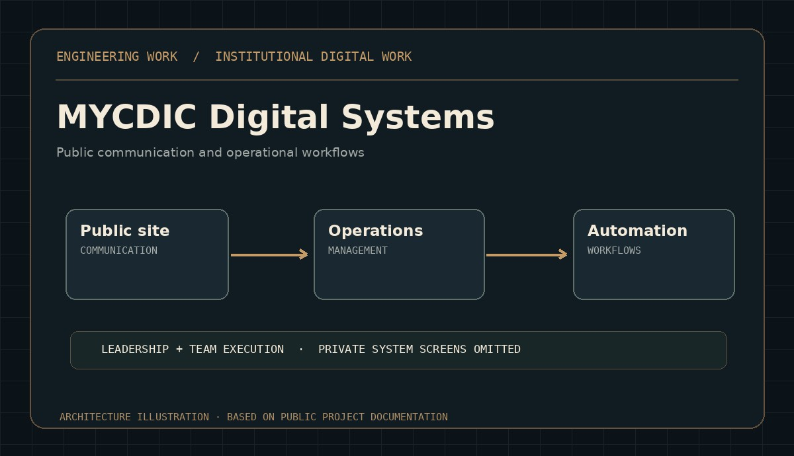

ARCHITECTURE ILLUSTRATIONINSTITUTIONAL DELIVERY / TEAM LEADERSHIP
MYCDIC digital environment
Leading digital platform initiatives with MYCDIC and Trendad teams, covering the public website and internal administrative workflows.
Read the technical approach
Public communication, managed submissions, structured records, verification and correspondence. Internal screens and personal records remain private; responsibilities are shared with the teams.